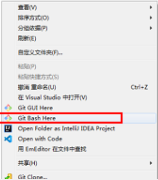
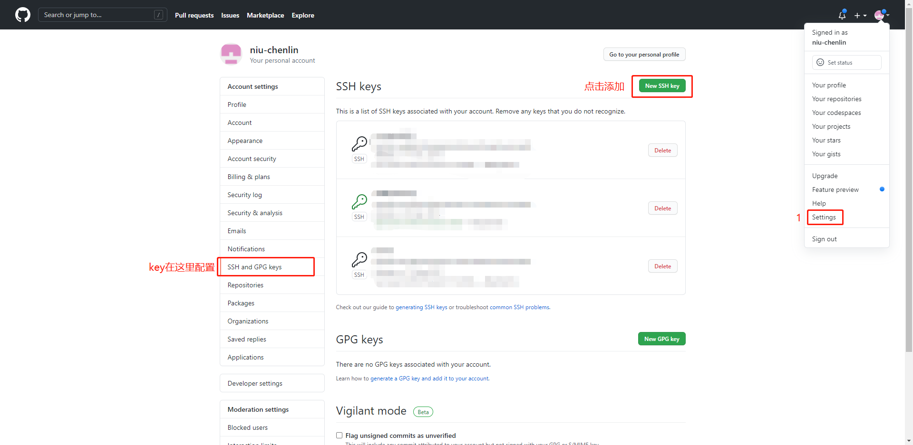
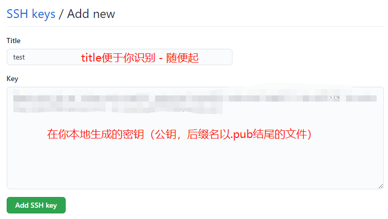
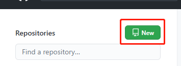
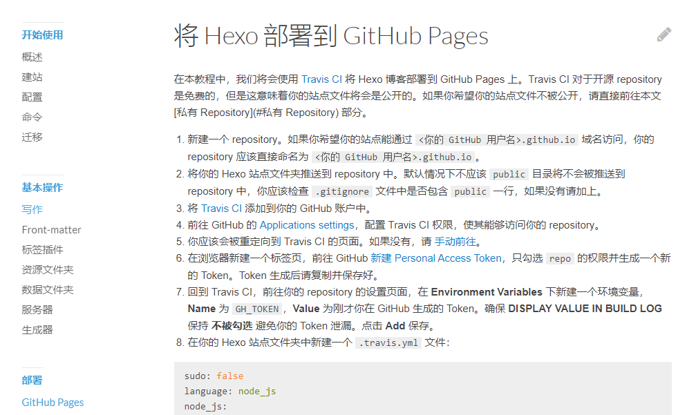
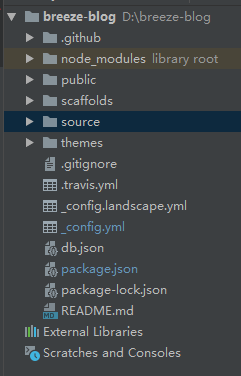

本文讲解如何基于gitbub pages + Hexo + Trvis cl实现自动化部署的博客网站。
通过本系列文章的学习，你将收获一个免费且漂亮的个人博客，并熟悉搭建、写作、部署的全流程。
一、前期准备
已经安装过的童鞋，可选择跳过本章节`
在开始之前你需要部署下列环境。
1、检测node.js是否安装成功
window用户使用 win+r 键，输入cmd，打开命令提示符
mac用户打开终端
键入下列命令后，输出v…..即为安装成功
|
2、检测git是否安装成功
|
3、打开git终端配置git相关参数

4、配置你的账号信息
|
5、配置你的SSH Key
首先你需要在本地生成你的SSH Key，生成的方法使用如下命令
|
检测你的密钥是否生成
|
文件中包含 id_dsa 或 id_rsa 命名的文件即为成功
使用你的git账号登录后按照下图所示先添加你的public key

复制你的公钥
|

6、在git中创建你的代码仓库以存放你的源码

7、你的Travis cl账号并关联你的GitHub账号
这边的步骤推荐按照Hexo官网教程去做 地址：Hexo

8、开始配置你的Hexo
首先在本地安装你的Hexo
|
安装成功后即可使用hexo生成你的博客源码
|
这是我的项目目录

_config.yml 是配置文件，这里实现项目的全局配置
public 项目编译后的静态文件
source 项目源文件，当你通过hexo new …等方式创建的文件都在这里，运行hexo build 会把这些文件编译到public
themes 主题文件，关于博客主题我会在这里做详细介绍
其它文件做前端的童鞋通过知道是什么，我们这里仅关注如何搭建个人的博客网站，所以不做赘述，感兴趣的童鞋请自行了解node.js。
启动你的博客项目
通过如下命令，先编译后启动，最后在浏览器输入 http://localhost:4000即可
|
9、关联博客源码到git
在你的源码根目录中打开git终端，执行如下命令
|
OK，到现在你已经拥有了你的博客和管理你源码的代码仓库。
10、额外的配置
- 如果你创建的是以 [用户名].github.io方式创建时，你不需要在git中做任何配置，但要保证在你项目master分支下只能存储编译后的静态文件（public）。
源码需要另外创建分支，一般是gh-pages，如果使用Travis cl不要忘记配置监听和推送的分支。 - 其它的仓库名称没有以上限制，但是需要手动指定GitHub Pages的构建分支，指定步骤 Settings –> Pages页中的Source，一般源码在master，静态文件在gh-pages分支
（记得在git终端创建分支）。
二、自动化配置
自动化配置分2种情况，第一种使用hexo-deployer-git插件，第二种使用Trvis cl持续集成服务帮助我们实现。
- hexo-deployer-git，其原理是当执行hexo clean && hexo g -d命令时hexo会自动把编译文件推送到指定的分支，指定推送分支在_config.yml文件。
deploy:
type: 'git'
repo: git@github.com:niu-chenlin/myStaticBlogs.git
branch: gh-pages # Hexo的public文件会推送到这个分支
# 当执行 hexo deploy 时，Hexo 会将 public 目录中的文件和目录推送至 _config.yml 中指定的远端仓库和分支中，并且完全覆盖该分支下的已有内容。 - Trvis cl，其原理是每当你提交源码到git时，Trvis cl会自动编译指定分支下的代码并把编译后的文件推送到指定分支。
配置Trvis cl进行自动化部署
开始此步骤前请确保你已经完成准备工作中的- 第7条
在本地博客目录下创建一个名为 .travis.yml 的文件，与 _config.yml 要在同级目录。
然后在文件中写入以下内容：
|
三、测试
打开git终端push你的代码，然后访问你的GitHub Pages博客地址。push代码命令如下
|